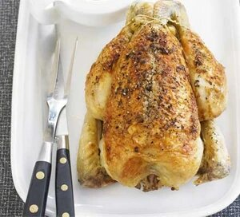

Classic roast chicken & gravy

Back to recipes
Description:
What more can we say? A classic roast chicken recipe should be in
everyone's repertoire, and it can always save the day.
Ingredients:
- 1 onion, roughly chopped
- 2 carrots, roughly chopped
- 1 free range chicken, about 1.5kg/3lb 5oz
- 1 lemon, halved
- small bunch thyme (optional)
- 25g butter, softened
For the gravy
- 1 tbsp plain flour
- 250ml chicken stock (a cube is fine)
Steps:
-
Heat oven to 190C/fan 170C/gas 5. Have a shelf ready in the middle of
the oven without any shelves above it.
-
Scatter 1 roughly chopped onion and 2 roughly chopped carrots over the
base of a roasting tin that fits the whole 1 ½ kg chicken, but doesn’t
swamp it.
-
Season the cavity of the chicken liberally with salt and pepper, then
stuff with 2 lemon halves and a small bunch of thyme, if using.
-
Sit the chicken on the vegetables, smother the breast and legs all over
with 25g softened butter, then season the outside with salt and pepper.
-
Place in the oven and leave, undisturbed, for 1 hr 20 mins – this will
give you a perfectly roasted chicken. To check, pierce the thigh with a
skewer and the juices should run clear.
-
Carefully remove the tin from the oven and, using a pair of tongs, lift
the chicken to a dish or board to rest for 15-20 mins. As you lift the
dish, let any juices from the chicken pour out of the cavity into the
roasting tin.
-
While the chicken is resting, make the gravy. Place the roasting tin
over a low flame, then stir in 1 tbsp flour and sizzle until you have a
light brown, sandy paste.
-
Gradually pour in 250ml chicken stock, stirring all the time, until you
have a thickened sauce.
-
Simmer for 2 mins, using a wooden spoon to stir, scraping any sticky
bits from the tin.
-
Strain the gravy into a small saucepan, then simmer and season to taste.
When you carve the bird, add any extra juices to the gravy.
BBC goodfood